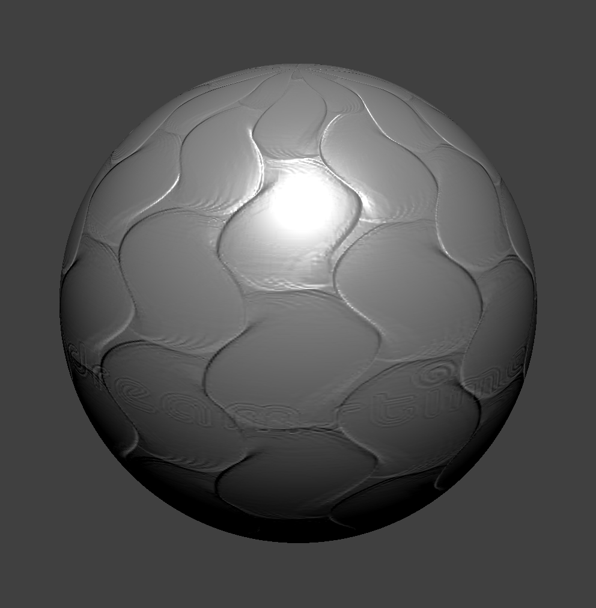

Overview
We implemented a cloth simulator using the mass-spring method of representing a cloth. Additionally, we implemented common GLSL shaders to render the cloth in the viewport. This project supports the following features:
In this section, we created a grid of point masses that will represent our cloth. To connect the point masses together, we implemented springs between the point masses that will then be used to simulate internal forces within the cloth.
We applied external and internal forces in order to physically simulate our cloth. To do this, we calculated the total force on each point mass and then updated its position. Also, to ensure the cloth stays intact, we took inspiration off of a paper and implemented constraints ensuring that the distance between two point masses did not exceed 110% of the rest length at any given time.
We handled collisions between the cloth and other primitives. Here, we determined whether the cloth fell inside an object and revised each point mass's new position to be outside of the object.
While the cloth can interact with other objects, it also needs to be able to recognize itself as a collider to prevent clipping. In order to handle self-collision, we built a hash-map that maps each point mass's position to a unique box in 3D space, and correct a particular point mass's position based upon the positions of other point masses within the same box.
We implemented various GLSL shader programs for diffuse and blinn-phong materials. We also supported shaders for texture mapping, bump and displacement mapping, a reflective mirror-like material, and a toon shader.
We added wind to the cloth simulation by creating a sinusoidal wind field and applying the force due to the field to the cloth.
Part 1: Masses and springs
|
|
|
|
|
|
We initialized a grid of point masses and filled in each point mass's attribute. For example, we needed to determine whether or not a point mass was pinned (so that part of the cloth wouldn't fall during simulation), and what the point mass's position is. Additionally, we needed to initialize spring forces between each point mass. There are three springs that we implemented to simulate the cloth:
- Structural constraints, which exist between point masses directly above, below, left, or right of a given point mass
- Shearing constraints, which exist between point masses diagonal to each other
- Bending constraints, which exist between a point mass and another point mass, two away from each other, either above, below, left, or right
Most of the debugging included making sure that the spring constraints were implemented correctly, as there are lots of edge cases to take into account (for example, we will not initialize any springs for a point mass on the upper-left most corner, and a point mass on the rightmost side won't have one of the shearing constraints, and sometimes structural or bending constraints for the upper one or two point masses).
Part 2: Simulation via numerical integration
We implemented basic cloth simulation due to internal and external forces on the cloth. First, we calculated the contribution of the force on a particular point mass due to external forces (such as gravity) using Newton's 2nd law, which states that:
where F is the force, m is the mass, and a is the acceleration (for this project, a is just the force due to gravity).
Next, we calculated the contribution due to intrinsic forces in the cloth, namely, those due to the spring constraints. The force applied due to a spring is given by Hooke's law, which states that:
where F_s is the force due to a spring, k_s is the spring constant, p_a and p_b refer to positions of point masses a and b respectively, and l is the spring mass's rest length.
Since we want our bending constraints to be weaker, we scaled the force down due to bending constraints by a factor of 0.2.
Next, we used Verlet integration to compute the new positions of each point mass due to the net force caluclated, as explained above. At the next time interval, the updated position is expressed as
Adding some damping in our simulation and because we have access to the position at time t-dt, we can then rewrite the above equation as:
Lastly, to ensure that the distance due to each point mass doesn't get unreasonably large, we take inspiration from the SIGGRAPH 1995 Provot paper and only allow the distance between each point mass to be at most 10% greater than its rest length.
Spring Constant Analsysis
From observation of the images above, as the spring constant value increases, the cloth becomes more stiff and less droopy. This physical effect is explained by the fact that increasing the constant creates a sturdier spring which leads to the effect of not appearing as elastic for higher values of k. As we run the cloth sim, we notice for smaller values of k that the cloth behaves more like a thin sheet, kind of like silk. For larger values of k, the cloth behaves more like a sheet of stiff paper - less flowy movement per point mass as the cloth drops.
Density Analysis
As the density of the point masses increase, the cloth becomes similar to that of a lower spring constant. The reason why changing the density value has the opposite effect of changing the spring constant is due to the fact that an increase in density corresponds to an increase in the point mass's mass, and thus, the point mass's mass would be affected by external forces such as the force due to gravity more than the force due to the surrounding springs.
Damping Analysis
As the damping value increases, the cloth appears less wrinkly. Another way to describe the difference is the fact that the cloth comes to rest a lot faster that lower damping percentages and this is more apparent in the animation of cloth falling. Still, there are renmants that display the small pertubations. For example, in the image that displays damping at 0%, the ends of the fabric is still moving even after a long duration of letting the animation run. The image that shows damping at 1%, however, came to rest immediatly with totally straightened-out cloth at its ends.
|
|
Part 3: Handling collisions with other objects
We handled collisions with spheres and planes. In the case of the sphere, we checked to see if a given point mass's position was within the sphere (if the distance from the center of the sphere to the point mass is less than or equal to the radius of the sphere). If so, we updated the position so that it is just above the sphere's surface throught the use of a correction vector.
In the case of a plane, we checked for collision by determining if a given point mass had fallen from one side of the plane to the other. If so, we updated the position to be on the former side of the plane. In order to implement this, we checked the sign of the dot product due to the surface normal of the plane and the vector from a given point on the plane to the position of the point mass. If the sign of the dot product changed in a single time step, we know that the point mass had fallen from one side to the other.
Additionally, we applied a frictional force to the cloth and the sphere, so that the cloth would not slide off the sphere and the plane.
As the spring constant increases, the way the fabric sits on the sphere becomes more stiff. As mentioned before, this is due to the fact that the forces of the spring become stronger making the cloth less elastic.
|
|
Part 4: Handling self-collisions
One issue in our current implementation was that the cloth was clipping in itself. Thus, we handled self-collisions via a hash table, where we store point masses in a particular hash if they are neighboring each other. If we were to take each point mass and add up the force due to collision from all the point masses in the cloth, this would take n^2 time per time step. Thus, spatial hashing provides a faster, n-time algorithm for us to check collisions for each point mass.
In order to create our hash function, we virtually partitioned 3D space into 3D boxes with size
where w=3*width_of_the_cloth/num_width_points, h=3 * height_of_the_cloth / num_height_points.
We let the origin of the 3D space correspond to the corner for all 8 of these boxes. In other words,
imagine that one wall of the box lay every h units in the z direction, w units in the x direction,
and max(w,h) units in the y direction. If a particular point mass is within a certain box, we
assign the point mass to that box in the hash table. Since hash values are represented as floats,
we decided to floor divide each point mass's position by the dimensions of the box (which outputs the
vertex of the box closest to the origin; this is a unique value per box), and then took the
linear combination of the output:
The reason why we chose 101, 103, and 107 specifically is because they are large (enough) prime numbers, so the chances of getting the same hash value for two different coordinates close to each other (enough to affect the efficiency of calculating self-collisions) would be low.
When we actually implement the self-collision, we need to make sure for a given point mass, that the other point masses belonging in the same hash value contribute to the correction vector of the given point mass. We want to make sure this happens if the point mass is within 2*thickness apart from another point mass.
|
|
|
|
|
|
Varying Spring Constant Values
Throughout the entire simulation, we see that the cloth's mesh doesn't clip into itself. We implemented a data structure that allow us to test for collisions with point masses in surrounding boxes, and apply repulsive forces among them in order to avoid clipping.
As the value of the spring constant increases, the cloth appears to be more stiff in its fallen resting position, as explained in part 2.
Varying Density Values
As the density increases, the cloth appears to less stiffer, similar to smaller values of ks, and more stiffer as density decreases, as explained in part 2.
Part 5: Shading
What is a shader program and how vertex and fragment shaders work together to create lighting and material effects?
A GLSL shader program offers a way to render simple materials in meshes in a fairly inexpensive way (as opposed to physically-based raytracing). Such a program consists of a vertex shader, and a fragment shader; A vertex shader applies transformations to vertices (such as scaling, rotation, and translation) and passes data to the fragment shader. The fragment shader processes fragments (pixels) generated by rasterizing primitives and generates a color for each pixel.
They work together by taking the output of the vertex shader and passing the data to fragment shader; this output consists of the final position of the vertex in screen space, vertex normals, vertex tangents, UV coordinates, etc. The fragment shader takes the vertex shader's outputs as its inputs and calculates the final color of each fragment by calculating the final color of a particular vertex, and interpolating it across the entire mesh due to the colors of other vertices.
Explain the Blinn-Phong shading model in your own words.
Blinn-Phong combines ambient, diffuse, and specular components of lighting. Ambient lighting represents the overall light that illuminates all parts of the object uniformly. Diffuse lighting represents the light scattered equally in all directions off a matte surface. It's calculated using the Lambert cosine law, which involves the dot product between the surface normal and the direction of the light vector. In other words, the surface normals of an object will appear brighter if they point towards the direction of the light source, and dimmer, if away. Specular lighting represents the highlights on glossy surfaces. It's calculated using the halfway vector between the direction of the light source and the direction of the viewer (eye). The intensity of specular reflection is determined by the dot product between the halfway vector and the surface normal raised to a power known as the shininess coefficient.
|
|

|
|
|
|
Custom Texture

|
|
Bump and Displacement Mapping
Describe the methodology ofdisplacement and bump maps
|
|
|
|
|
|

|
|
There is a noticeable difference in bump and displacement mapping in the sphere and cloth's silhouette. In the bump map case, we see no change in the sphere and cloth's geometry. In the displacement map's case, we see that the geometry changes where the grooves of the brick texture are. In the image where the cloth is draped over the sphere, we notice the cloth looks puffier than the bump map case.
|
|
|
|

|
|
We see that a higher number of samples corresponds to a better resolution in the bump and displacement map's silhouette. The nxn samples correspond to the number of vertices that show up in the geometry (note the low-poly silhouette of the 16x16 bump-mapping example compared to the 128x128, which has a smoother geometry). In the displacement mapping case, we note that the silhouette seems better defined with a higher number of samples, whereas the 16x16 case results is a slightly jarring, lower-poly look. However, bump-mapping seems to perform better with a smaller amount of samples since the output with 16x16 samples and 128x128 samples look the same.
Mirror Shader
|
|
|
Custom Shader
We created a custom GLSL fragment shader that changes colors depending on the position of the camera to the origin, and gives it a toon-shading effect! We achieved this by calculating the diffuse of the object, and determining whether the amount of light emitted from the object is greater than or equal to 0.4. If so, we assign it a warm color. If not, we assign it a cool color, added on with some color changes due to the camera's position.
Extra Credit
We implemented a simplified wind solver which takes in a point mass and a Vector3D wind direction as arguments. The force contribution comes from multiplying the mass of the point mass with the acceleration due to a sinuosoidal wind field, calculated as follows given a particular x, y, and z basis:
For our cases, we set the frequency to 1. We then calculated a dot product between the vector form of the wind solver and the normal vector of the point mass to determine how much of the wind will affect the cloth. Additionally, we added a small jitter vector (by generating a small random Vector3D contribution) to simulate randomness within the wind solver.
Here are some of the results from the wind solver:
|
|
|
|